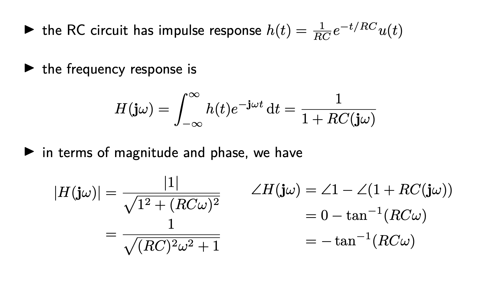

Last Edit: 3/11/26
LTI systems with Complex Exponential Inputs #
Known that a for a LTI system $T$, its output is the Convolution of input and Impulse Response
$$ y(t) = \int_{-\infty}^{\infty} h(\tau)x(t-\tau) d\tau $$
Now we are considering case where the input is a Complex Exponential $x(t) = e^{j\omega_0 t}$
Complex Exponential Inputs #
Sub in the $x(t) = e^{j\omega_0 t}$ to get the output as
$$ y(t) = \int_{-\infty}^{\infty} h(\tau) e^{j\omega_0(t-\tau)} d\tau= \left[ \int_{-\infty}^{\infty} h(\tau) e^{-j\omega_0 \tau} d\tau \right] e^{j\omega_0 t} $$
Which is just $h(t)$’s CTFT at $\omega_0$, $H(j\omega)$
This helps us conclude some property of the System
- If input is with frequency $\omega_0$, then output is still $\omega_0$
- There will be a shift for Magnitude and Phase of the input
Frequency response of a LTI system #
$$ H(j\omega) = \int_{-\infty}^{\infty} h(t)e^{-j\omega t} \text{d}t $$
This is Frequency Response of the system, that can be represent in Polar Form which is
$$ H(j\omega) = |H(j\omega)| e^{j\angle H(j\omega)} $$
- $|H(j\omega)|$: Magnitude, determine Amplitude scaling of input Frequency
- $\angle H(j\omega)$: Phase, the Phase Change to the input frequency
Ex. RC Circuit #



Car suspension System #

Response of a LTI System to a periodic Input #
Starting with a Periodic CT Signal with period $T_0 = \frac{2\pi}{\omega_0}$, its CTFS is
$$ x(t) = \sum_{k=-\infty}^{\infty} a_k e^{j k \omega_0 t} $$
Then use CTFT to transfer it into Frequency Domain
$$ X(j\omega) = 2\pi \sum_{k=-\infty}^{\infty} a_k \delta(\omega - k\omega_0) $$
Multiply it to the System to get its output $Y(j\omega) = H(j\omega) X(j\omega)$ which is
$$ Y(j\omega) = H(j\omega) X(j\omega)= 2\pi \sum_{k=-\infty}^{\infty} a_k H(j k \omega_0) \delta(\omega - k\omega_0) $$
Then do the inverse CTFT to get back in Time Domain
$$ y(t) = \sum_{k=-\infty}^{\infty} \underbrace{a_k H(j k \omega_0)}_{b_k} e^{j k \omega_0 t} $$
Now take a look at this output $y(t)$, it means, the output of the LTI system is the Scaling and Shifting of Components one by one based on their frequency
Response of a LTI system and the CTFT #
Notice in the previous part “Response of a LTI System to a periodic Input”, we used the CTFT and i-CTFT to only do calculations in Frequency Domain, this is because it’s more easy to do multiplication in Frequency Domain than do Convolution in Time Domain, as
$$ y(t) = (h * x)(t) \iff Y(\mathbf{j}\omega) = H(\mathbf{j}\omega)X(\mathbf{j}\omega) $$
Ex. Computing the output for the RC circuit #


LTI System and Invertibility #
A LTI system with impulse response h is invertible if there exists an impulse response $h_{inv}$ such that $h ∗ h_{inv} = \delta$
It’s kind of strange for the condition $h ∗ h_{inv} = \delta$, but if we take CTFT, this then becomes
$$ H(j\omega) H_{\text{inv}}(j\omega) = 1 $$
Thus we can get the Frequency Response for Inverse Response as
$$ H_{\text{inv}}(j\omega) = \frac{1}{H(j\omega)} $$
Condition for LTI System to be Invertible #
As $H_{\text{inv}}(j\omega) = \frac{1}{H(j\omega)}$, this means if and only if $H(j\omega)\neq 0$, then the system is Invertible
Ex. Invertible LTI System #

Ex. Invertibility and Feedback Interconnections #

Filtering via LTI systems #
Filter is the progress of selecting desired frequencies, and there’s basically four kinds of filters
- Low-Pass Filters (Remove all high frequency content)
- High-Pass Filters (Remove all low frequency content)
- Band-Pass Filters (Remove all content outside a band)
- Band-Stop Filters (Remove all content inside a band)
Filters can be conveniently designed using LTI systems through an appropriately chosen Frequency Response
That being said, as the input signal was $x(t)$, and the Response of System is $H(j\omega)$, then the output spectrum $Y(j\omega)$ is $Y(j\omega) = H(j\omega)X(j\omega)$, in this case, if we want to design a Low-Pass Filter, we just need a LTI System having $|H(j\omega)| \approx 1$ and $|H(j\omega)| \approx 0$
The Ideal Low-Pass Filter #
For $\omega_c>0$ consider the Frequency Response

$$ H(j\omega) = \begin{cases} 1 & \text{if } -\omega_c \le \omega < \omega_c \ 0 & \text{otherwise} \end{cases} $$
This System perfectly passes frequencies $|\omega|<\omega_c$, while its Impulse Response is
$$ h(t) = \frac{\sin(\omega_c t)}{\pi t} $$
Not Causal Problem #
Notice the Filter in Time Domain, which is a sinc function

Notice there’s value at $t<0$, this makes the LTI System a Not Causal, thus this can’t be apply in Real Time application
Instead of Ideal Filter, we often prefer Non-ideal but Causal filters for two reasons
- Can be modelled using Differential Equation
- Can be easily implemented in hardware/software for real-time use
In addition, the use of Ideal Low Pass Filer makes the output signal Oscillates as it’s a sinc function, that creates Gibbs Phenomenon
Non-Ideal LPF - RC circuit #
RC Circuit is a non-Ideal but Causal Low-Pass Filter, known that it have a Frequency Response

$$ |H_{\text{RC}}(j\omega)| = \frac{1}{\sqrt{1 + (RC\omega)^2}} $$
Notice on the top we define the Cut-off Frequency as $\frac{1}{RC} = \omega_c$
This Frequency Response is just $h_{\text{RC}}(t) = \frac{1}{RC}e^{-t/RC}u(t)$ in time domain

From the figure, notice all parts before $t=0$ is just 0, this makes the function a Causal System
Comparison of RC circuit and Ideal LPF #
Here we are going to use a example to show the difference of Ideal & Non-Ideal Filter

The Cut Frequency has been set to $\omega_c=2~rad/s$
Ideal Filter #
- Anticipate the input change (As it’s not Causal)
- Perfectly removes the oscillatory component above $\omega_c$
RC Circuit #
- Reacts only after the input changes
- Attenuates (decay) the oscillatory component, but can’t remove it
The Ideal High-Pass Filter #
The HPF has the Frequency Response
$$ H(j\omega) = \begin{cases} 1 & \text{if } |\omega| > \omega_c \ 0 & \text{otherwise} \end{cases} $$
While this HPF has the Impulse Response of $h(t) = \delta(t) - \frac{\sin(\omega_ct)}{\pi t}$
Non-Ideal HPF - RC circuit #
Still using RC circuit, known that A Capacitor will block the high frequency and pass the low frequency, thus if we use the Resistor Voltage as output instead of Capacitor Voltage, then this RC circuit will become a High-pass Filter
The High-pass Filter’s Frequency Response is

$$ |\tilde{H}(j\omega)| = 1 - \frac{1}{\sqrt{1 + (RC\omega)^2}} $$
This will given the output Signal of